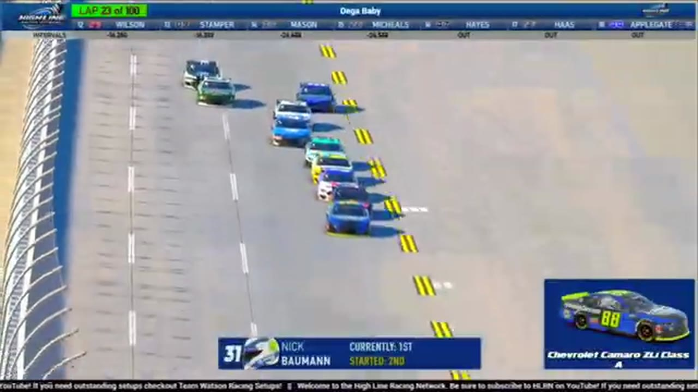

Brandon Taylor
Team assignment not stated in the structured owner record.
A PODIUM FILE WITH AN OPEN RESULT HORIZON
- Official files
- 3
- Central editions
- 1
- Exact tape cues
- 3
- Accepted podiums
- 1
Brandon Taylor has 1 position-specific top-three receipt: S1 R16 at Talladega (P2). No feature win is currently supported in the accepted result ledger. A consistently stated team affiliation remains open for owner review. The currently indexed source window runs from February 22, 2026 through April 7, 2026.
The official tape index connects the name to 3 race files, 1 Central edition, and 3 primary-broadcast navigation cues. The densest direct-tape categories are finish (1 cue) and postrace (1 cue). Those counts describe where the name is easiest to find; they are not fault, pace, or performance grades. A source-attributed car frame is published with its original video and timestamp. That is the current discovery map for Brandon Taylor.
That is enough for a real result dossier without pretending the archive knows every start or finish. Owner classifications can extend the record later through the same stable race IDs. Separately, 6 Highline Live files sit on the bonus shelf and never enter the official season ledger. The displayed name is labeled transcript normalized; that status remains visible so an owner roster can strengthen or correct the identity without rewriting the evidence trail. Those boundaries define Brandon Taylor's public HLRN file.
3 featured race-tape cues
These are discovery routes into complete HLRN broadcasts, not performance grades or inferred results.
- S1 / R16 · RESULT
David Applegate is confirmed atop the Talladega results
The finale broadcast corrects its first post-race call after Trevor Haley's disqualification, identifying David Applegate as the winner, Brandon Taylor second, and Larkin Boyer third.
Talladega - S1 / R16 · FINISH
Trevor Haley clears Talladega's final-lap wreck and crosses first
Nick Bowman is turned while making the final-lap move, and Trevor Haley clears the wreck to receive the apparent winner call. This chapter preserves the live finish only; the later disqualification and accepted result remain in the post-race adjudication receipts.
Talladega - S1 / R16 · POSTRACE
Jim Sagredo and Brandon Taylor anchor the Talladega post-race result review
S1 / R16 at 2:49:09: The reviewed live-race close has passed before this Talladega result booth review begins with Jim Sagredo and Brandon Taylor named in the discussion. It remains post-race context, not a new incident, stage, strategy call, finish, or result receipt.
Talladega
Recent editions connected to Brandon Taylor
Verified team history is not consistently stated. Complete starts, finishes, and points remain open beyond the recovered results. Name normalization remains reviewable against owner records.